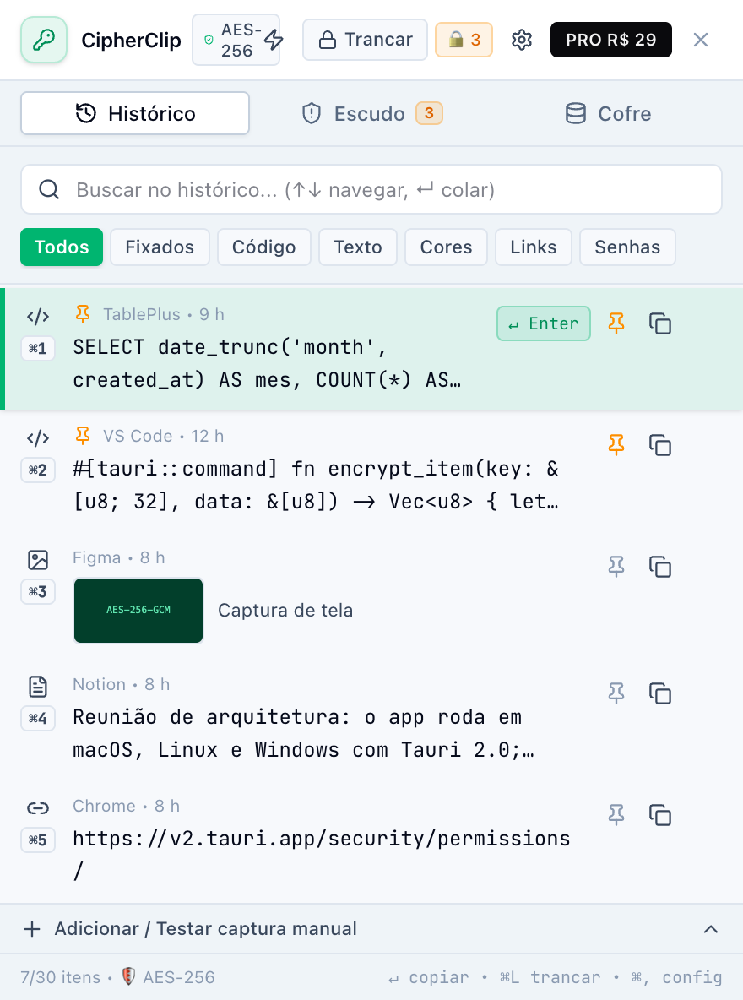
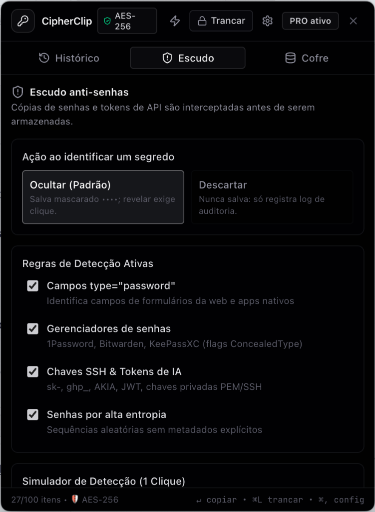
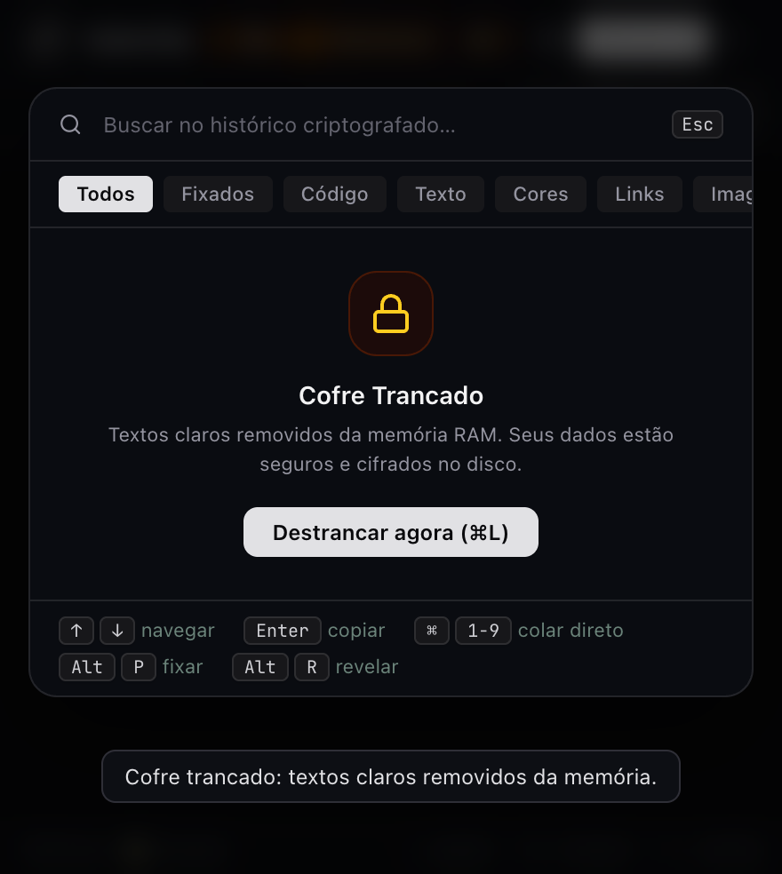
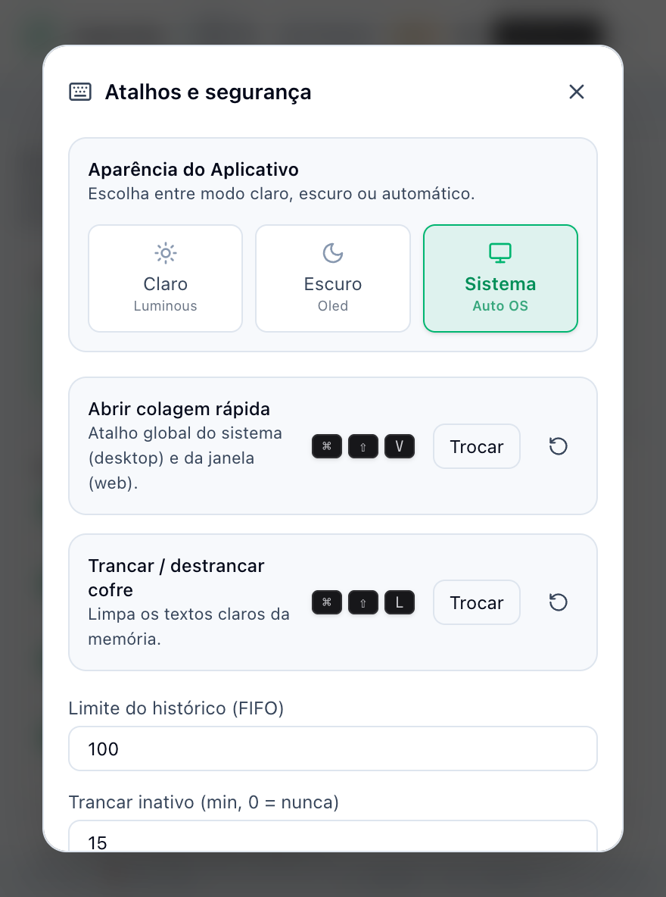

Criptografia AES-256-GCM no disco, integração nativa com macOS Keychain, auto-paste instantâneo ao teclar Enter, histórico com prints PNG e escudo inteligente que bloqueia senhas e chaves de IA.
✓ Sem tela de app danificado • ✓ Atualizações via brew upgrade • ✓ Instalação silenciosa
Interface compacta, sem atrito e ergonomicamente desenhada para viver na barra de menus do seu Mac.

Popover Menu Bar
Navegação e auto-paste com Enter
Visualização rápida de snippets com senhas mascaradas

Filtro de Entropia
Detecção de chaves de IA e tokens
Medição Shannon e regras de bloqueio zero-knowledge

Desbloqueio Biométrico
Touch ID ou PIN mestre
Purga imediata de textos claros da memória RAM

Aparência Luminous
Modo Claro, Escuro e Sistema
Atalhos globais e personalização completa da interface
Tudo roda estritamente no seu computador. Zero telemetria, zero servidores externos, zero rastreamento.
Pressione Enter para colar instantaneamente na sua janela anterior (IDE, Slack, navegador) sem AppleScript e sem atrasos.
Cada snippet ou imagem é cifrado com AES-256-GCM antes de tocar o SSD. Chave mestra protegida no macOS Keychain.
Detecta flags de gerenciadores de senhas, campos password e cálculo de entropia Shannon para evitar vazamentos.
Tranque com ⌘L e limpe a memória RAM na hora. Destranque com Touch ID (Apple Silicon) ou PIN mestre PBKDF2.
Copie prints da tela e cole como imagem diretamente com miniatura visual no histórico e atalho de seleção.
Recifra todo o banco de dados com uma nova chave criptográfica de 256 bits instantaneamente sempre que desejar.
Sem assinaturas recorrentes. Compra única vitalícia com todas as atualizações futuras incluídas.
Perfeito para quem quer um clipboard rápido, limpo e com criptografia no dia a dia.
Poder ilimitado para desenvolvedores e quem trabalha intensamente no Mac.
Entrega imediata da chave de licença no seu e-mail.
Não. O CipherClip é 100% local-first. Todo o banco de dados é gravado localmente no seu Mac com criptografia AES-256-GCM e a chave mestre reside no Keychain do sistema operacional.
O Homebrew é a maneira oficial recomendada pela comunidade open-source. Ele remove automaticamente as restrições do macOS Gatekeeper, garantindo que o app abra direto na barra de menus sem nenhum aviso de "app danificado".
Após finalizar o pagamento, você receberá instantaneamente por e-mail sua chave exclusiva no formato CLIP-XXXX-XXXX-XXXX. Abra o CipherClip, clique em PRO e cole sua chave.
Sim! A base do CipherClip é multiplataforma. As versões para Windows (instalador .exe e Winget) e Linux (.AppImage e .deb) estão no roadmap oficial e sua licença PRO será universal para todas as plataformas.